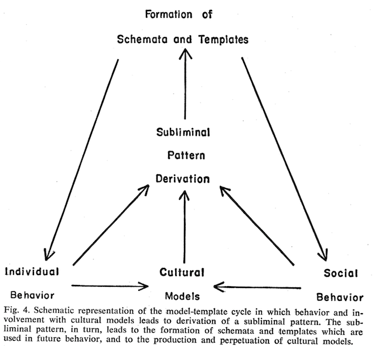

Sentiment Analysis 1
UVA DS 5559
Raf Alvarado
09 April 2019
National Champions
Review
- Word embeddings allow us to explore meanings that exist independently of documents
- Documents are a means to an end
- WEs represent collective representations
- You can generate your own semantic models or incorporate pre-trained models
- Like topic models, they use documents to generate representations that transcend documents
- Pre-trained models should align with your corpus
- There are many ways to generate WEs
- In principle, the logic applies to other things, e.g. proteins, social groups
Overview
- So far, we have been focused on cognitive content
- Mental maps, topics, word meanings
- But Culture = Ethos + Worldview
- Worldview: categories, theories, “world hypotheses”
- Ethos: values, norms, sentiments (toward things)
- The two are closely related and hard to disentangle
- The branch of text analytics concerned with ethos is Sentiment Analysis (SA)
Ethos and Worldview
Dante’s Divine Comedy describes a worldview that is also and ethical system

Overview
Also, instead of a class of technical methods, SA refers to a general problem domain with many approaches
SA usually has specific empirical goals in mind
What is Sentiment Analysis?
- SA is a branch of text analytics concerned with inferring evaluative content from textual data
- “Sentiment” is a cover term for values, opinions, emotions, attitudes, etc. (elements of ethos)
- In general, the positive or negative orientation of people toward things
- Need not be binomial (like/dislike)
- Some SA methods look for intensities of different emotions
- Some SA methods look for intensities of different emotions
- Part of a broader and much older branch of TA called content analysis
- Related also to Qualitative Data Analysis and semantic markup
- Same principle: identify words that signify something
- A pervasive and essential tool
- BTW, Facebook’s “like” feature is essentially a way to for people to label content by sentiment
Uses of SA
- Brand sentiment for marketing (or anything else)
- Do people like our product? Our candidate?
- Population mood or tone
- National consciousness (Mishne and Glance 2006)
- Stock market (Bollen, et al., 2011)
- Geography of happiness (Mitchell, et al., 2013)
- Opinion mining
- Some argue it is better than polling
- Narrative patterns
- Sentiment patterns within texts
Sentiment as Signal

Summary of World Broadcasts
January 1979—March 2011
Sentiment as Signal (ii)

Points = individuals; color = average word happiness of nearby tweets (red is happier, blue is sadder)
Text as Sensor
Texts are like sensors
They are transducers of cultural and social information
Methods of SA
- Lexicon-based
- General Inquirer
- LIWC (“Luke”) – Linguistic Inquiry and Word Count
- NRC Word-Emotion Association Lexicon (aka EmoLex)
- ML-based approaches
- Supervised, Unsupervised, Semi-supervised (Naive Bayes, Maximum Entropy, Support Vector Machines, etc.)
- Rules-based
- VADER: Valence Aware Dictionary for sEntiment Reasoning
- Enhanced Lexicon
- Hu and Liu, Ensemble Classification
Lexicon
A lexicon is a kind of dictionary in which words are glossed as features
Features may include ontological categories and numeric properties
In our data model, a lexicon is an extension of the vocabulary table and an ontology might be added as another table
Lexicons are usually human-generated
Sentiment Lexicons
- Polarity-based
- LIWC, General Inquirer (GI)
- Typically, these lexicons cover more than sentiment
- SA uses two categories (positive/negative) from larger lexicon
- They assign positive or negative value based on context free meanings (“semantic orientation”)
- LIWC, General Inquirer (GI)
- Valence-based
- ANEW, SentiWordNet, SenticNet
- Assign a valence, or magnitude
General Method
- Get a BOW model of a corpus
- Tag words that match terms in the lexicon
- Can be done with an inner join between tokens and vocabulary
- Words inherit the polarity and intensity from the lexical entry
- Score each document by some function
- majority voting, averaging, thresholding, counting
- Enhanced methods include more features and heuristics
The General Inquirer (GI)
- The General Inquirer System is one of the oldest SA tools
- Developed at Harvard University in 1961 by Philip J. Stone, Robert F. Bales, et al.
- Developed for content analysis research problems in the behavioral sciences
- In 1962 it merged with the Hunt Concept Learner to produce a method for automatic theme analysis
- Research was intended to discover how humans learn to classify things
- Even though crude by today’s standards, it demonstrates the fundamental design principles of sentiment analysis
- And it’s still around – see GI homepage
- See https://www.joe.org/joe/2001december/tt1.php
GI Book

On sale at Amazon for $1,497.32
The IBM 7090
- Developed using what was then a the state-fo-the-art IBM 7090
- One of IBM’s first transistor-based (solid state) computers
- Designed for NASA’s Mercury and Gemini space missions
- The computer in Hidden Figures that Dorothy Vaughn, supervisor of human computers, learned to use.

Dorothy Vaughan
Colby’s Research
- The cultural anthropologist Benjamin Colby applied the GI system to folklore
- Anthropologists often study myths
- Folklore is a variant of myth (so-called “fairy tales”)
- Goals is to observe and represent thematic content
- “Clusters of such themes provide insight into the way cultures conceptually organize the world around them.”
- Does a comparative study of five cultures
- Kwaikiutl, Egypt, Eskimo, Hindu India, and China
Colby Quote
“Only very recently has it become possible, through the use of computers, to process large numbers of narrative texts having many variables in order to discover statistically significant patterns which are culturally distinctive and amenable to testing in the field.”
Colby 1966: 793
GI Data Model
- A dictionary containing:
- A. High frequency words of low information content (i.e. stopwords)
- B. Medium frequency words with multiple meanings and are therefore ambiguous out of context (e.g., ‘content’ ‘general’)
- C. Words with single predominating meanings
- A corpus of texts containing:
- Folktakes with 9000 words per cultural sample
- Dictionary groups A and B removed
- An lexicon of words mapped onto themes
- Based on existing work, e.g. Harvard’s IV-4 dictionary and the Lasswell Value Dictionary
- 180 themes used to classify type C words
- 8 Groups: Value categories, perception and communication, space and time, self-identity, nature, sex and kinship, activities, miscellaneous
Themes
- In addition to the GI themes, Colby incorporates the anthropologist’s Clyde Kluckhohn’s monumental study of culture
- He defined a set of core oppositions with which to “score” cultures
- E.g.
Self-Other, Good-Evil, Individual-Group, Emotional-Rational, Quality-Quantity - Today, we would call these ontological
- Kluckhohn’s approach consistent with idea that cultural systems of classification are built out of oppositions
- E.g.
- Colby reduces these to a smaller set of less general, more precises themes
- See samples …
- He defined a set of core oppositions with which to “score” cultures
Use of Ontologies
Note that today we use ontologies to define features in machine learning
Sample Themes

GI Algorithm
- After removing stopwords and polyemous words, each word in each cultural sample is tagged with its corresponding category in the thesaurus
- The tags are tallied into counts for each culture
- Counts are evaluated by frequency, clustering, and correlations, both within and between samples
GI Results

GI Interpretation
- Kwaikiutl and Eskimo
- Both have very high count for categories Arrive, Go, and Place, reflecting a concern with travel, exploration, distance, and territory
- Clearly differentiated from the other three cultures in this
- May reflect the similarity in geographical situation
- Eskimo
- High scores for the themes Aware, Form, See, Smell, Texture, etc.
- This cluster of themes connected with sensory perception
- Relates to ecological adaptation of the Eskimo to a harsh environment
- Also high counts for weather themes suggest importance of ecological adaptation
GI Interpretation (ii)
- Egyptian
- Co-occurrence of high counts for Dominate, Follow, Ask
- Suggests importance of social participation, submission to power and authority
- High count also given Independence may indicate a simultaneous value emphasis upon autonomy and self-sufficiency
- India and China
- High counts for both affective and rational themes
- Contradicts preconceived ideas about the complementarity of these themes
- (Americans, at least in the Enlightenment tradition, tend to separate reason and emotion)
- Shows the heuristic value of computer work
GI Interpretation (iii)
- The themes Boundary, Form, Time, and Hunt form a covariant cluster
- If a culture’s tales strongly emphasize one of the member themes, they will also strongly emphasize the others
- Conversely, weak emphasis of one theme is accompanied by weak emphasis of the others
- Colby speculates that these themes may have a “cognitive interrelationship which transcends cultural differences.”
- i.e. They may consitute a cultural universal
- If a culture’s tales strongly emphasize one of the member themes, they will also strongly emphasize the others
- These results show that the method can discovery contrasts that differentiate and characterize cultures
Observations
- These kinds of observations seem relevant to the interpretation of words in our PCA example
- The component loadings might be mapped onto ontological categories like this
- These theme clusters also look a lot like topics surfaced by LDA
Some Criticisms
- Translatability of Class C words. Counter examples:
- Japan: on
- Brazil: saudade
- Netherlands: gezellig
- Removal of polyemous terms loses a lot of cultural information
- Sample bias
- Only 9000 words per “culture”!
- Definition of culture is notoriously slippery
- Does India or China have a single culture?
Culture Patterns in Narrative
- Colby extends his research by mapping ontological terms onto narrative
- Same analytic duality we have seen — structure vs. process
- Also comes up with a general model of culture
- Cultural templates
Culture Pattens Theory
- Anthropologists have long held that culture exhibits patterns and configurations
- Example configurations: Apollonian and Dionysian (Ruth Benedict)
- Apollonian: tradition, prudence, restraint, harmony
- Dionysian: danger, power, violence, self-reliance
- Similar to Indo-European Mitra / Varuna (celeritas / gravitas)
- Hypothesis: Word counts (i.e. text analytics) indicate cultural templates or pattern components
- Each folktale reflects the influence of a such a template system
- i.e. A generative model, whereby templates generate texts
Culture Patterns Method
- Divide folktales into 9 units of equal length
- 3 = beginning, middle, and end
- Stack tales into composite
- i.e. Unit number becomes a label
- Focus on Japanese and Eskimo folktales
- In translation
- Tally thesaurus terms for each unit across folktales
Some Observations
- When data from both cultures are viewed together, time and place words appear disproprtionately in Part 1
- These are related to the situating function
- However, when look at individually, time and space have different distributions
Time
Space and “Search”
- In terms of space, the category “search” is distributed differently in each corpus
- Search appears early in Eskimo texts
- Implies searching for game (hunting)
- Decreases as story proceeds (as these activities tend to be interrupted)
- Search appears later in Japanese texts
- Searches are for secrets, hidden things, special places
- Increases with narrative time
- In other words, search involves different things
- Principle of context – same words, different context, different meaning
Communication

Culturally Significant Differences
- 10 most significant contrasts betwen distributions established by Chi Square and Kendall’s Tau tests
- Not described :-(
- Out of 74 basic categories and 195 subcategories
- Japanese – 55 tales (22%) considered distinct
- Eskimo – 70 tales (26%)
Colby 1996 Fig 1a

Ten most significant patterns of word-group frequencies (1—5)
Colby 1996 Fig 1b

Ten most significant patterns of word-group frequencies (6—10)
Some Generalizations
Japanese Culture
Externally oriented, concern with social things
material objects
limitatins due to domination
impersonal divine justice
social situations
nuclear family
Eskimo Culture
Concern with physical abilities, individually oriented
physical actions
limitations due to strength
magic
survival
extended family
Criticisms and Observations
- Distributions based on small samples
- Cultural generalization from small sample
- May be suitable for characterized collections and subcollections of texts
- Sensitive to ontologies?
Cultural Templates

Typical Problems with Content and Sentiment Analysis
- Limited vocabularies
- Assumed monosemy
- Do not include grammar, syntax, punctuation, emoticons
- Can’t catch irony, sarcasm
- Can’t detect context, which can shift meanins (e.g. “large”)
VADER
- A relatively recent SA tool developed to overcome these limitations
- Although designed for social media, is generalizable
- Combines existing lexicons and employs a hybrid apprach to achieve good performance
- Design
- 7500 lexical features
- Polarity
- Intensity [-4, +4]
- Gold-standard list
- Uses heuristics to define text characteristics (e.g. punctutation, emoticons, all caps)
- Applies to sentences
- Implemented in NLTK
VADER Flow

VADER Example

VADER Example
VADER is smart, handsome, and funny.
{'pos': 0.746, 'compound': 0.8316, 'neu': 0.254, 'neg': 0.0}
VADER is smart, handsome, and funny!
{'pos': 0.752, 'compound': 0.8439, 'neu': 0.248, 'neg': 0.0}
VADER is very smart, handsome, and funny.
{'pos': 0.701, 'compound': 0.8545, 'neu': 0.299, 'neg': 0.0}
VADER is VERY SMART, handsome, and FUNNY.
{'pos': 0.754, 'compound': 0.9227, 'neu': 0.246, 'neg': 0.0}
VADER is VERY SMART, handsome, and FUNNY!!!
{'pos': 0.767, 'compound': 0.9342, 'neu': 0.233, 'neg': 0.0}
VADER is VERY SMART, uber handsome, and FRIGGIN FUNNY!!!
{'pos': 0.706, 'compound': 0.9469, 'neu': 0.294, 'neg': 0.0}
VADER is not smart, handsome, nor funny.
{'pos': 0.0, 'compound': -0.7424, 'neu': 0.354, 'neg': 0.646}Compounds Scores
- The compound score is computed by summing the valence scores of each word in the lexicon, adjusting according to the rules, and then normalizing between -1 (most extreme negative) and +1 (most extreme positive)
- Most useful metric for single unidimensional measure of sentiment for a given sentence -‘normalized, weighted composite score’
Thresholds
- To classify sentences as either positive, neutral, or negative, use:
- positive sentiment:
compound score >= 0.05 - neutral sentiment:
(compound score > -0.05) and (compound score < 0.05) - negative sentiment:
compound score <= -0.05
- positive sentiment:
- The pos, neu, and neg scores are ratios for proportions of text that fall in each category
- These should all add up to be 1
- These are the most useful metrics if you want multidimensional measures of sentiment for a given sentence.
Lexicon-based Ensemble Classification Sentiment Analysis
- Efficient method for counting sentiment orientation
- Solves the problem of context
- Outperforms supervised learning approaches in time and memory complexity without sacrificing accuracy
- Generates unigram, bigram and trigram lexicons
Frequentiment
- Employs “frequentiment”
- Based on frequency of features (words) in the document
- Averages their impact on the sentiment score compared to documents without these features
- Eensemble classification then used to improve the overall accuracy
- Outperform other popular lexicons and some supervised learners
- 3–5 times faster than the supervised approach
- One of the most comprehensive comparisons of domain sentiment analysis in the literature.
NRC Word-Emotion Association Lexicon (aka EmoLex)
- 4,182 unigrams (words)
- English words
- General domain; common words
- Manually annotatied by crowdsourcing on Amazon Mechanical Turk (AMT)
- sentiments: negative, positive
- 0 (not associated) or 1 (associated)
- 0 (not associated) or 1 (associated)
- emotions: anger, anticipation, disgust, fear, joy, sadness, surprise, trust
- not associated, weakly, moderately, or strongly associated
- URL: http://saifmohammad.com/WebPages/NRC-Emotion-Lexicon.htm